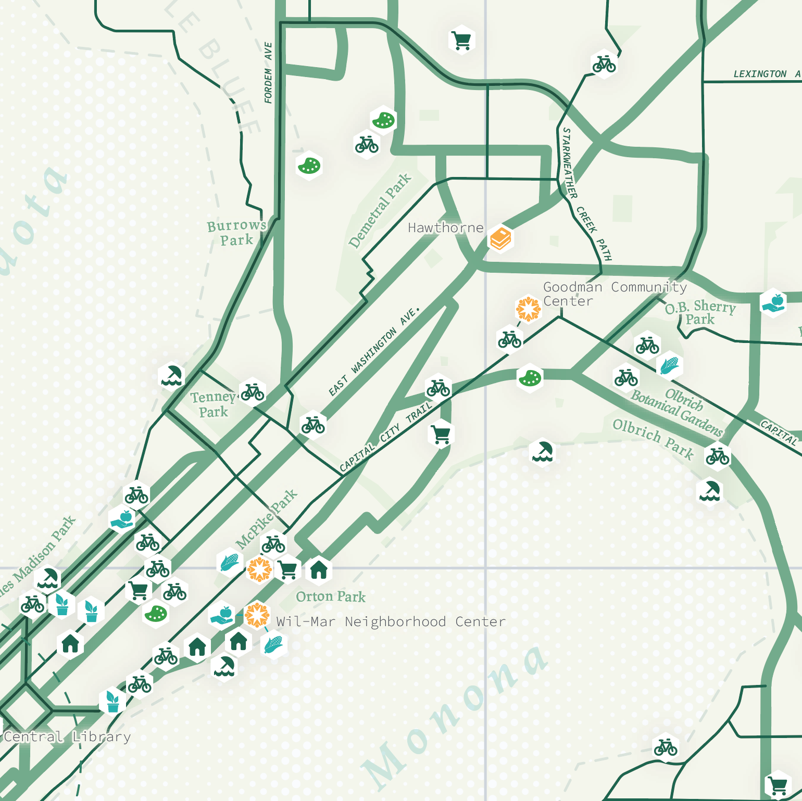
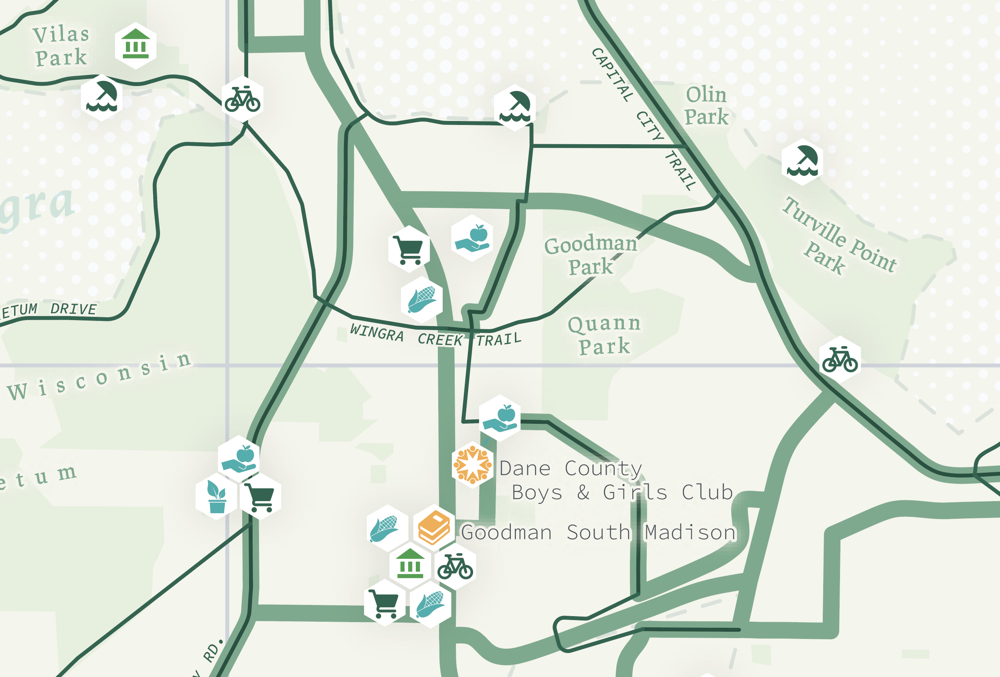
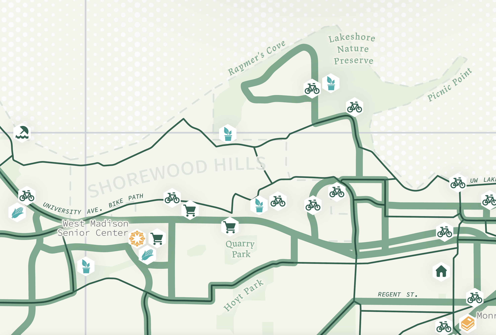

Madison Sustainability Guide
Capitalism and sustainability are incongruent concepts. The former is based on infinite growth through resource consumption, while the latter on human systems being in balance with the finite capacities of our earth. For many years, the narrative around sustainability was focused on individual choice. Thankfully there has been a shift toward recognizing the structures in place that limit our agency to affect change for a sustainable future. Thanks to the work of environmental activists and scholars, most people today understand that auto, energy, and tech companies bear most of the responsibility, rather than individuals choosing which car to drive, or where to spend their money. With income inequality at an all-time high, the economic situation of most prevents us from even making meaningful choices in this realm. This shift in consciousness often manifests in feelings of powerlessness. Indeed, if there are overbearing structural forces minimizing our individual agency, it is easy and perhaps even logical to conclude “what’s the point in doing anything?” or “what can I even do”?

To reclaim our agency in sustainability we must first identify gaps in the structures.
The coronavirus pandemic has rekindled a desire for sustainability that is beginning to bubble
beneath
the surface in the form of community gardens, free markets, cooperative living and working, mutual
aid
and solidarity networks, public transportation, and biking infrastructure. These community
economies,
counter to the hegemonic capitalist economy, are already functioning here in Madison and are at the
core of
what a sustainable future will look like. As we continue to see the simultaneous collapse of
economic, political,
and ecological systems, we must foster existing community economies and build new resilient ones for
the future.

Thus, the goal of this project was to summarize the existing sustainability networks and
community
economies in Madison. I did this by creating a paper pamphlet that identifies neighborhoods in the
city where
it is easiest to live sustainably and summarizes relevant locations for community economies in a
poster-sized
map intended to be hung on the wall. Currently all this information exists online on different city
websites
and data hubs. To my knowledge, this data has never been compiled in this way. It hasn’t been
brought offline
into a pamphlet to serve as a guide to these resources and to invite people to think about how to
build new ones.

Geography plays a powerful role in sustainability. Not just from city to city, but within the metro area.
{kind=link}
{kind=link}
{kind=link}
GIS data is often created for analysis and not cartography. Therefore, a large portion of the time spent on the project was making this data visually palatable.
The next steps for this project are ground truthing and publishing. I plan to ride the bike routes and explore parks this summer to verify the GIS data and add more context to the routes and parks I’ve mapped. I am also planning to bring the finished pamphlet to the city and other potentially interested groups, with the goal of having copies printed and distributed at libraries, community centers, farmers’ markets, etc. I am excited and hopeful about the next steps for the Madison Sustainability Guide.